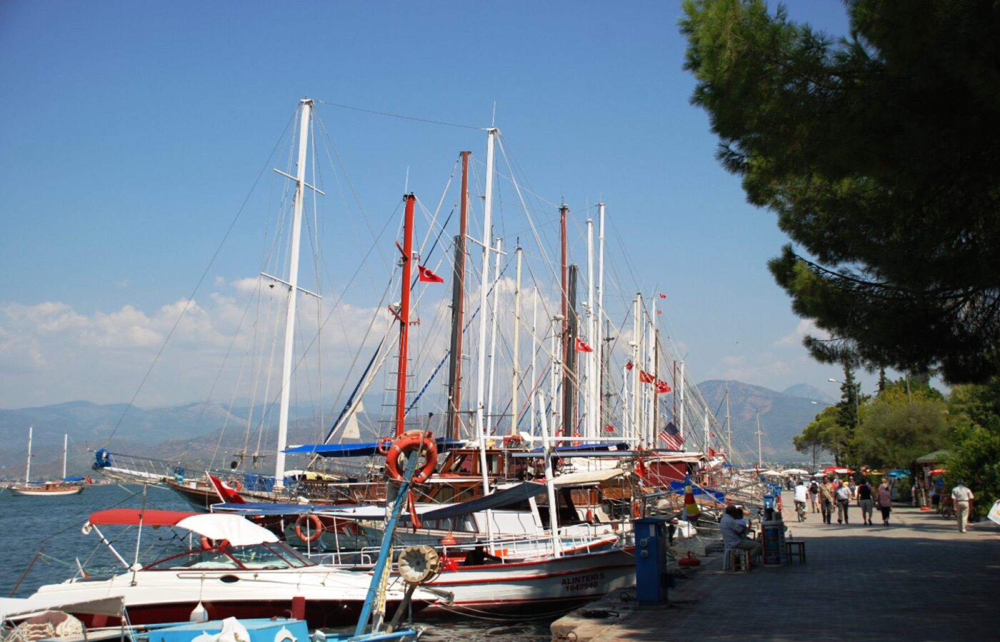
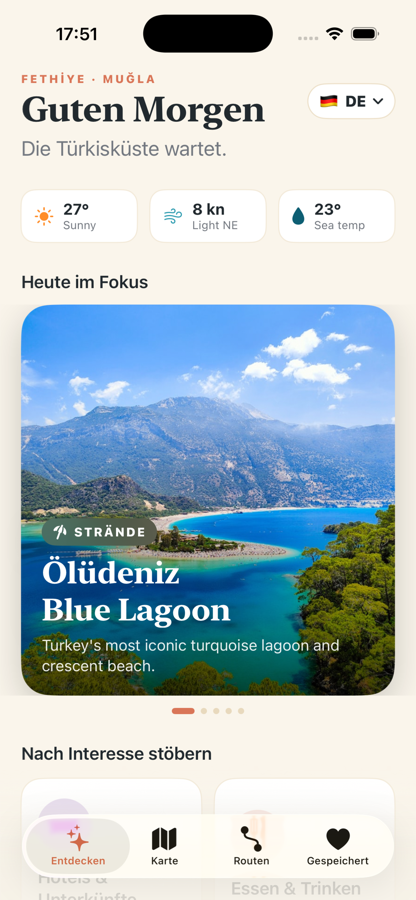
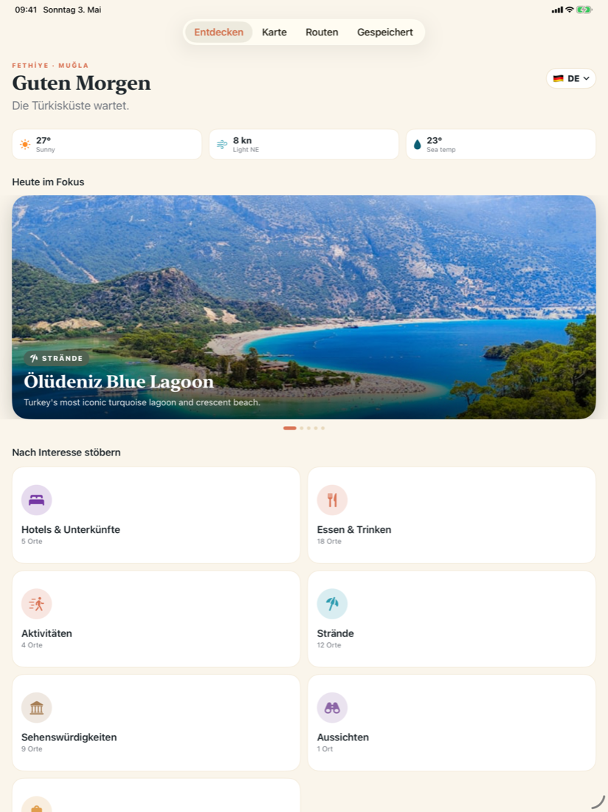
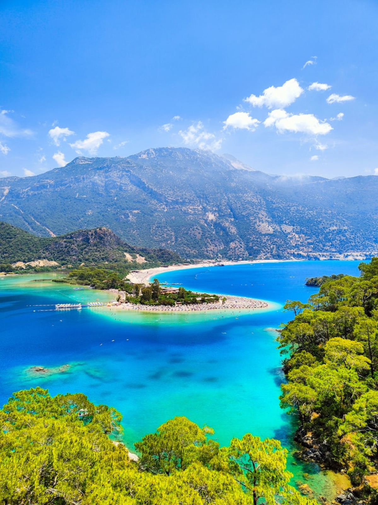
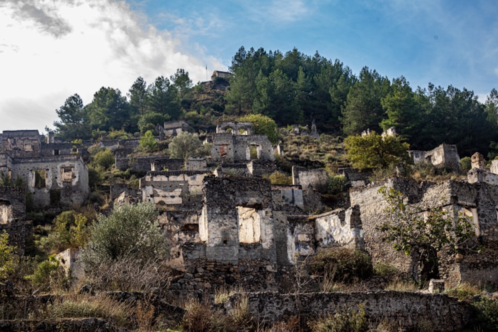
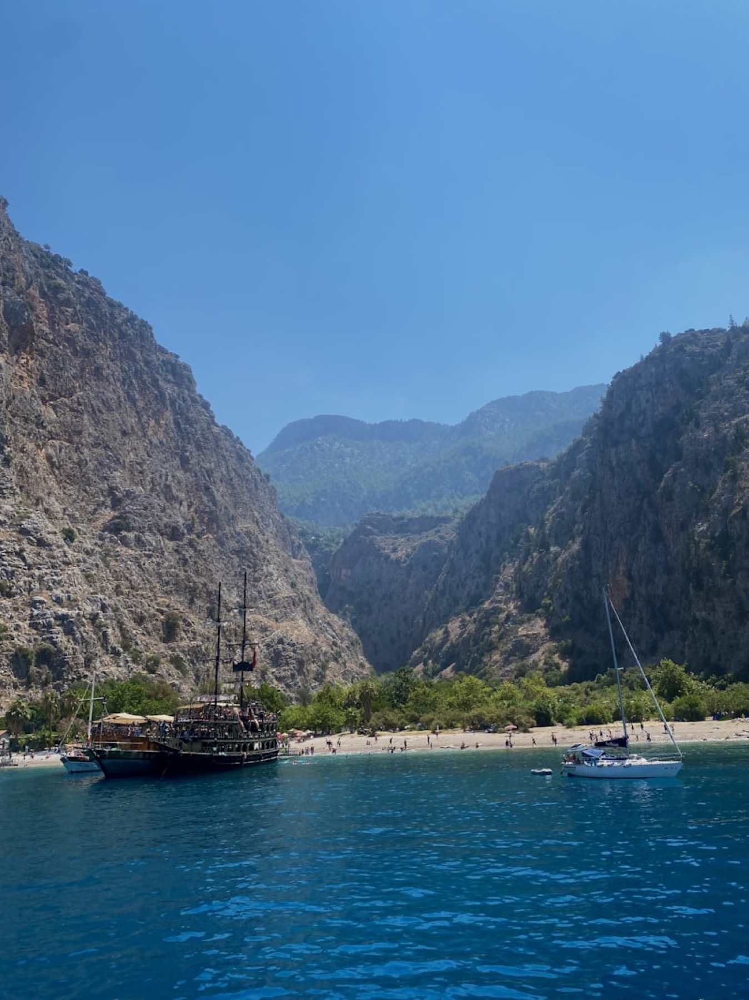
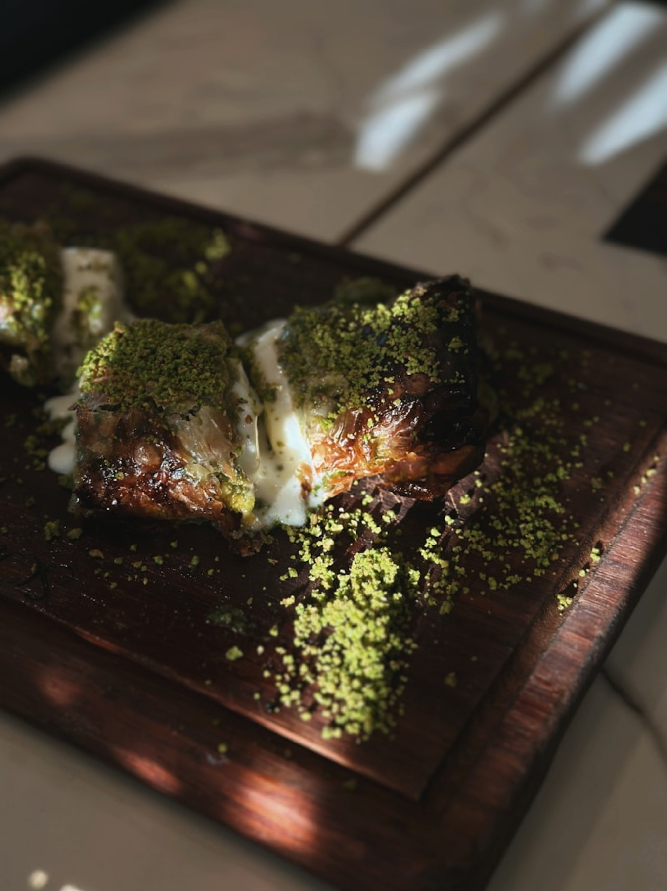
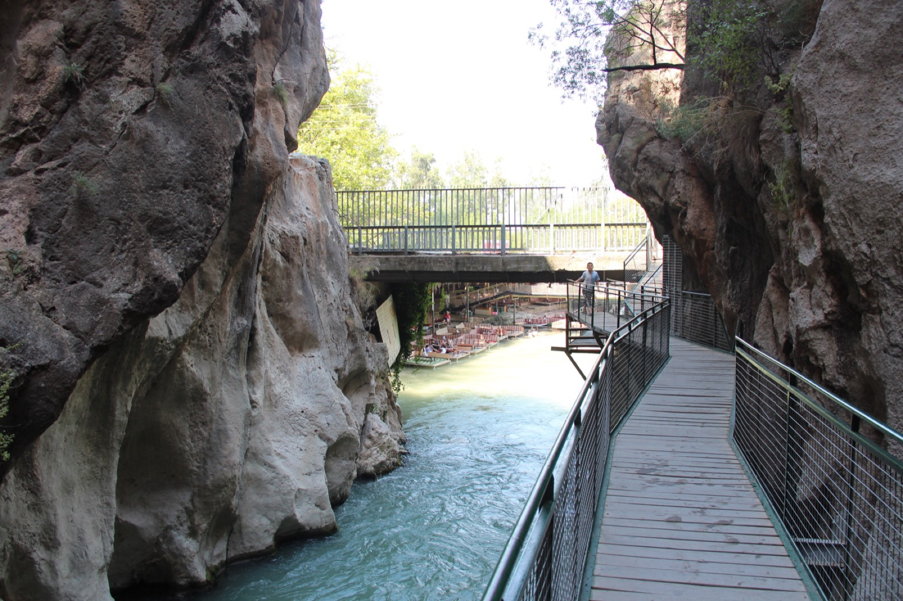

Wie in der App strukturiert
Discover, Explore, Routes und Saved stehen auch hier im Fokus, damit die Landingpage nicht losgelöst vom Produkt wirkt.

FETHİYE · MUĞLA · LOCAL GUIDE
Die App für Fethiye: Strände, antike Orte, Restaurants, Tagesrouten und eine Karte, die direkt auf die wichtigsten Spots führt.

Discover, Explore, Routes und Saved stehen auch hier im Fokus, damit die Landingpage nicht losgelöst vom Produkt wirkt.
Die App ist für Reisende und lokale Besucher gebaut: schnell scannen, speichern, hinfahren.
Die Bilder und Screenshots kommen aus dem vorhandenen Fethiye-Guide-Projekt auf diesem Mac.
APP EXPERIENCE
Die Startseite der App kombiniert Wetter-Feeling, Editor's Picks, Interessen-Kacheln und schnelle Tagesideen. Die Karte und Routen helfen danach beim konkreten Losgehen.

Hero-Orte, Wetterstrip, Kategorien und handverlesene Picks.
Karte mit Filterchips, Suche und Fokus auf einzelne Orte.
Fertige Tagespläne für Strand, Essen, Geschichte und Natur.
Lieblingsorte für die Reiseplanung vormerken.
CURATED PLACES
Von Ölüdeniz bis Kayaköy: die Landingpage zeigt dieselben Bildwelten und Themen, die Nutzer später in der App wiederfinden.

Iconic turquoise lagoon, early morning swims and paragliders overhead.

Stone lanes, history and golden-hour walks.
Mountain views and the paragliding route above the bay.

Boat access, cliff walls and a hidden beach feeling.

Pick, grill, sit down and eat in the centre of town.
DAY PLANS
Die App verbindet Orte zu echten Tagesabläufen: Strand morgens, Altstadt oder Markt am Nachmittag, gutes Essen am Abend.

FETHİYE · MUĞLA
Speichere deine Lieblingsorte, finde die passende Route und nimm die besten Strände, Märkte und Aussichtspunkte direkt mit.